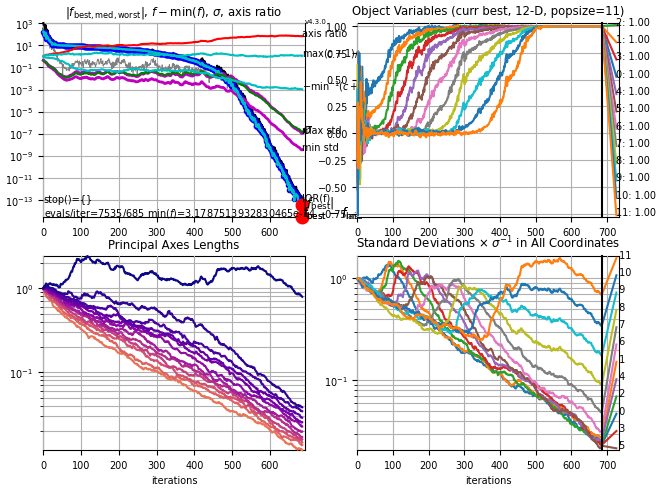

| UP (The CMA Evolution Strategy) |
This page provides implementations of the CMA-ES and links to libraries that contain such implementations. All implementations provided in this page follow very closely Hansen (2006). They support small and large population sizes, the latter by implementing the rank-µ-update (Hansen et al, 2003) with non-uniform recombination weights (Hansen and Kern, 2004) and an improved parameter setting for the step-size adaptation (Hansen and Kern, 2004). The default population size is small (Hansen and Ostermeier, 2001). Further (optionally) supported features:
Noise.on='yes', however, don't rely on this option without a rough
understanding of what it does).
sigma will be ≈ 2, see also below.
The natural encoding of (some of) the parameters can also be "logarithmic". That is, for a parameter that must always be positive, with a ratio between typical upper and lower value being larger than 100, we might use 10x instead of x to call the objective function. More specifically, to achieve the parameter range [10–4,10–1], we use 10–4×103x/10 with x in [0; 10]. Again, the idea is to have similar sensitivity: this makes sense if we expect the change from 10–4 to 10–3 to have an impact similar to the change from 10–2 to 10–1. In order to avoid the problem that changes of very small values have too less an impact, an alternative is to choose 10–1 × (x/10)2 ≥ 0. In the case where only a lower bound at zero is necessary, a simple and natural transformation is x2 × default_x, such that x=1 represents the default (or initial) value and x remains unbounded during optimization.
In summary, to map the values [0;10] into [a;b] we have the alternative transformations a + (b-a) × x/10 or a + (b-a) × (x/10)2 ≥ a or a × (b/a)x/10 ≥ 0.
Another reasonably good method for handling boundaries (box-constraints) in connection with CMA-ES is described in A Method for Handling Uncertainty in Evolutionary Optimization...(2009) (pdf), see the prepended Addendum and Section IV B. In this method, a penalty, which is a quadratic function of the distance to the feasible domain with adaptive penalty weights, is implemented in Matlab and Python codes below.
Addressing non-linear constraints is more intricate. In benign cases the optimum is not very close to the constraint and simple resampling works fine. The provided implementations do automated resampling when the objective function returns NaN. A simple (to implement) alterative is to compute Σi (xi - domain_middlei)2 + a_large_constant as objective function value for infeasible solutions. This might often work better than resampling. Yet, it still might work poorly if the optimum is at the domain boundary.
Another method to address non-linear constraints is described in Multidisciplinary Optimisation in the Design of Future Space Launchers (2010) (pdf), Section 12.4.1, but not (yet) available in any of the provided source codes.
For a very short and general overview on boundary and constraints handling (as of 2014 not entirely up-to-date though) in connection with CMA-ES, see the appendix of The CMA Evolution Strategy: A Tutorial, p.34f.
CMA-ES/c-cmaes on GitHub (download zip file) provides a pure ANSI C implementation in a fairly object-oriented way, where the iteration step can be explicitly controlled. Also several independent optimization instances can be used at the same time. Therefore, the integration into any existing program in C or C++, should be fairly easy. The option "diagonalCovarianceMatrix" does not provide linear space complexity.
purecmaes.m is a minimalistic implementation running in Matlab and Octave. It is mainly provided for educational purpose: reading, understanding and running basic experiments. It contains roughly 100 lines, with 20 lines reflecting the core implementation of the algorithm. This implementation has only rudimentary termination conditions implemented, under some circumstances it might be numerically inefficient and it should probably not be used for running "real" experiments.
cmaes.m (version >3.60, former versions) provides an interface similar to Matlab's optimization routines, e.g. fminsearch and fminunc. The following (optional) variants/extensions are implemented.
cmaes3.33.integer.m is an experimental version for variables with given granularity (e.g. mixed-integer) via option StairWidths, see also A CMA-ES for Mixed-Integer Nonlinear Optimization.
cmaesV255.m (version 2.55, July 2007) is the former version which saves the data record history internally. plotcmaes.m and dispcmaes.m are stand alone functions to plot/display data output from cmaes.m before version 3. They can be used to investigate the output data while the optimization is still running.
For Octave the package octave-forge is needed (thanks to Luís Correia for the advise).
pycma is a production code with a functional interface cma.fmin() and the class cma.CMAEvolutionStrategy with ask-and-tell interface (see Collette et al 2010 and below). An improved boundary handling is implemented and many more features that are useful in practice: a variety of termination and verbosity options, variable scaling, variable shading.
fmin and
OOOptimizer.optimize has changed since version 1.0.
If necessary, download the last version 0.92.06 of cma.py with the
old interface.
pycma module includes cma.purecma (API epy-docs with source code), a shorter implementation for reading and education.
cma.purecma can be used from a stand alone file and has a minimal number of dependencies, in particular it does not need the python module numpy. For this reason it is slower (however it runs with very competitive speed in pypy, a Python with just in time compilation). If the Python module matplotlib is available, basic plots are provided.
ipython shell (also in combination with the Jupyter notebook) provides a superset of the python shell and allows, for example, to easily access the functionality of matplotlib with MATLAB/Octave-style interface (via the %pylab mode). Three distributions provide an easy installation of all necessary (and many more useful) tools, including ipython:
sage -ipython), with additional emphasis on symbolic computation and some sage-only functionality. For general infos see the Sage documentation, for a possibly useful install info see sage-matlab.
In Python, the "//" operator denotes truncated division. One of the biggest design mistakes in Python versions ≤ 2.x is the division operator "/". The operator behaves depending on the type of the operands: integer, 1/2 == 0, or float, 1./2 == 0.5, division. This weird and bug-prone behavior, inherited from C, has been abandoned from version 3 and can fortunately also be changed in previous versions: to get the "new" ("true") division where 1/2 == 0.5 in Python 2.x, we can use python -Qnew instead of python (however this is depreciated), or type
from __future__ import division
ipython profile create in the OS-shell to create a profile and add
c.InteractiveShellApp.exec_lines = ['from __future__ import division']
from __future__ import print_function thereby enabling the print function (available since Python version 2.6, default from version 3.0) replacing the print statement (default before version 3.0).
An example output from a run of CMA-ES on the 12-dimensional
Rosenbrock function, using python "import cma; cma.plot()" for plotting
(having installed Python and pycma).

The lower figures show the square root of eigenvalues (left) and of
diagonal elements (right) of the covariance matrix C. The actual sample
distribution has the covariance matrix σ2 C. Weights
for the covariance matrix are set proportional to w_k = log((λ+1)/2) - log(k) for k=1,...,λ however with different learning rates for positive and negative weights.
class OOOptimizer(object): def __init__(self, xstart, *more_args, **more_kwargs): """take an initial point to start with""" self.xstart = xstart self.iterations = 0 self.evaluations = 0 self.best_solution = BestSolution() # for keeping track self.xcurrent = self.xstart[:] # a copy self.initialize(*more_args, **more_kwargs) # implement in derived class def ask(self): """deliver (one ore more) candidate solution(s) in a list""" raise NotImplementedError # implement in derived class def tell(self, solutions, function_values): """update internal state, prepare for next iteration""" # book keeping self.iterations += 1 self.evaluations += len(function_values) ibest = function_values.index(min(function_values)) self.xcurrent[:] = solutions[ibest] self.best_solution.update(solutions[ibest], function_values[ibest], self.evaluations) # here, more work needs to be done in a derived class # raise NotImplementedError # unless, e.g., pure random search def stop(self): """check whether termination is in order, prevent infinite loop""" if self.evaluations > self.best_solution.get()[2] + 100: return {'non-improving evaluations':100} # here more test should be done return {} def result(self): """get best solution, e.g. (x, f, possibly_more)""" return self.best_solution.get() + (self.iterations, self.xcurrent) def optimize(self, objective_function, iterations=2000, args=()): """find minimizer of objective_function""" iteration = 0 while not self.stop() and iteration < iterations: iteration += 1 X = self.ask() # deliver candidate solutions fitvals = [objective_function(x, *args) for x in X] self.tell(X, fitvals) # all the work is done here return self class BestSolution(object): """keeps track of the best solution""" def __init__(self, x=None, f=None, evaluation=0): self.x, self.f, self.evaluation = x, f, evaluation def update(self, x, f, evaluations=None): if self.f is None or f < self.f: self.x, self.f, self.evaluation = x[:], f, evaluations def get(self): return self.x, self.f, self.evaluationAn implementation of an optimization class must (re-)implement at least the first three abstract methods of
OOOptimizer: __init__, ask, tell. Here, only the interface to __init__ might change, depending on the derived class. An exception is pure random search, because it does not depend on the iteration and implements like
class PureRandomSearch(OOOptimizer): def ask(self): """delivers a single candidate solution in ask()[0], distributed with mean xstart and unit variance """ import random return [[random.normalvariate(self.xstart[i], 1) for i in range(len(self.xstart))]]The simplest use case is
res = PureRandomSearch(my_xstart).optimize(my_function)A more typical implementation of an
OOOptimizer subclass rewrites the following methods.
class CMAES(OOOptimizer): def __init__(self, xstart, sigma, popsize=10, maxiter=None): """initial point and sigma are mandatory, default popsize is 10""" ... def initialize(self): """(re-)set initial state""" ... def ask(self): """delivers popsize candidate solutions""" ... def tell(solutions, function_values): """update multivariate normal sample distribution for next iteration""" ... def stop(self): """check whether termination is in order, prevent infinite loop""" ...A typical use case resembles the
optimize method from above.
objectivefct = ... optim_choice = 1 long_use_case = True if optim_choice == 0: optim = PureRandomSearch(xstart) else: optim = barecmaes2.CMAES(xstart, 1) if long_use_case: while not optim.stop(): X = optim.ask() # deliver candidate solutions fitvals = [objectivefct(x) for x in X] # or do something more complicated to come up with fitvals # or ask for more solutions optim.tell(X, fitvals) # all the work is done here else: optim.optimize(objectivefct) print optim.result()See the minimalistic Python code above for a fully working example.
Testing a stochastic algorithm is intricate, because the exact desired outcome is hard to determine and the algorithm
might be "robust" with respect to bugs. The code might run well on a few test functions despite a bug that might later compromise its performance. Additionally, the precise outcome depends on tiny details (as tiny as writing c+b+a instead of a+b+c can give slightly different values. The difference is irrelevant in almost all cases, but makes testing harder).
An effective way of testing is to compare two codes one-to-one, furnished with the same "random" numbers. One can use a simple (random) number generator. The numbers need not to be normal, but should be continuous and symmetric about zero. Tracking the internal state variables for at least two iterations must lead to identical results (apart from numerical effects that are usually in the order of 10-15). Internal state variables are the distribution mean, the step-size and the covariance matrix, and furthermore the two evolution paths.
For comparing outputs, at the minimum the fitness plots should be available. The plots generated in purecmaes.m define a more comprehensive set of reasonable output variables: fitness, sigma, sqrt(eigenvalues(C)), xmean.
The code should be tested on the following objective/fitness functions that can be found, for example, in purecmaes.m, and the results should be compared to trusted output, e.g. the one below ☺ The default test case can be 10-D. Besides the default population size, it is advisable to test also with a much larger population size, e.g. 10 times dimension. I usually use the following functions, more or less in this order. If not stated otherwise, we assume X0=0.1*ones and sigma0=0.1 in 10-D and default parameters.
Ideally, more dimensions should be tested, e.g. also 3 and 30, and different population sizes.
I appreciate any feedback regarding the provided source code and regarding
successful and unsuccessful applications or modifications of the
CMA-ES. Mail to  .
.

{kind=link}
{kind=link}
{kind=link}
{kind=link}
{kind=link}
{kind=link}